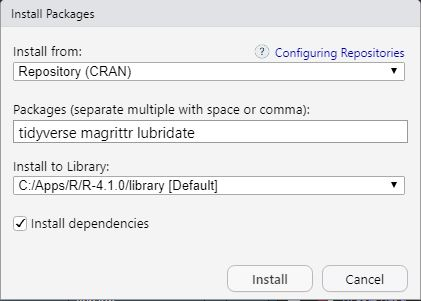

Module 2 Install Tidyverse and Other Packages
Methods in this course will depend heavily on functions from the tidyverse, magrittr, and lubridate packages. You can load these packages in RStudio with the following steps.
- Open the “Packages” tab (in the lower-left pane if you rearranged your RStudio panes to match my preferences).
- Press the “Install” button on the toolbar.
- Enter the names of the three packages in the “Packages …” box.

- Press the “Install” button.
- Check to see if
tidyverseis installed by typinglibrary(tidyverse)in the console to see if you get a message similar to that below (version numbers may be different but they should be at or greater than those shown below).
library(tidyverse)